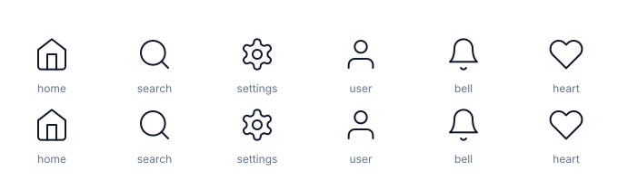
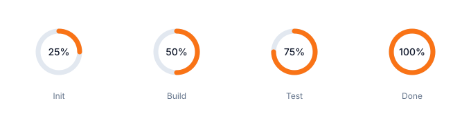
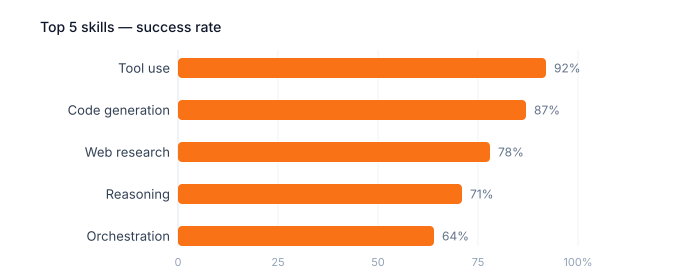
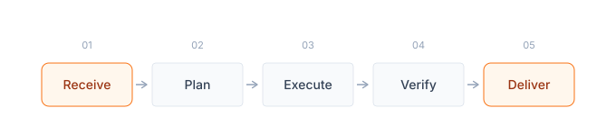
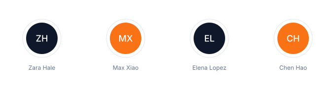

Twelve examples produced with the svg-skill markup patterns (static SVG) and the visualise component patterns (interactive HTML). All assets follow MyStyle1: Inter, flat fills, no gradients.
Six standalone SVG files in examples/, each with xmlns, viewBox and aria attributes.





Six standalone HTML pages demonstrating the visualise component library. Open each in a new tab.
Side-by-side cards with metrics, recommended-option accent border and badge.
Four-card KPI grid with deltas, responsive down to two columns.
Slider that models parallel subagents against coordination overhead, live output.
Chart.js doughnut of token spend by phase, flat palette, offline fallback text.
Structural SVG diagram, 680px viewBox, context-stroke arrow markers.
Styled run record card with avatar, status pill and key-value rows.